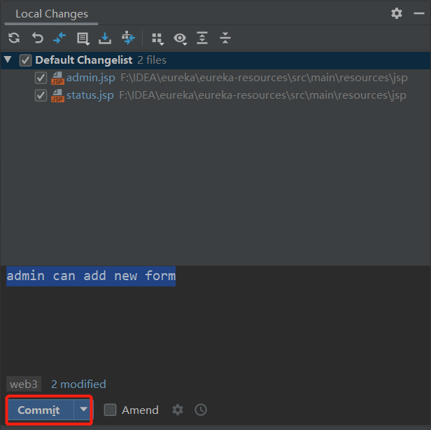
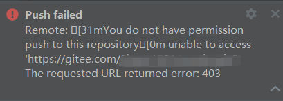
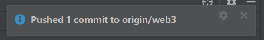

之前总结了 git 的操作流程，虽然用命令行执行 add 操作的时候需要一个个进行添加，总觉得十分的麻烦，不过之前接触的都是自己开发的小项目，也不会涉及到太多的程序文件，所以一直都用 git bash 依次添加。不过最近接触学长的项目实在是太大了 orz 于是趁前辈在请教了一下用 IDEA 进行 push 项目操作的方法，不知道是不是只有我太菜了不知道这波操作，总之也记录一下。
# 1. Commit
Project 右键 ->Git->Commit Directory，窗口上面会显示本地与上次 pull 的代码不同的地方，就是具体修改了哪个文件，下面是 commit 内容，就是简述一下此次代码做了哪些修改，填写完毕后点击 "Commit" 把代码发到缓存区。

# 2. Git Pull
很容易忽略的一点，也是我觉得前辈们操作特别严谨的地方，Project 右键 ->Git->Repository->Pull，如果操作执行后右下角弹窗显示 "up-to-date"（忘截图了），则说明当前本地里的项目代码是最新版本的，即我准备 push 的期间没有其他人进行了 push 代码操作。这样确认一下可以防止成员修改被吞，或者自己是基于旧版本进行开发导致某种意义上错误的代码回溯，确认之后就可以进行 push 啦
# 3. Git Push
Project 右键 ->Git->Repository->Push，需要确认窗口右侧：上传分支是当前本地项目所用的分支（忘截图了）。确认后点击 Push，如果是第一次对该项目进行 push 操作，需要输入用 github/gitee 用户名密码，并且确认自己的账号已被添加进项目工程中，否则会出现无权上传的错误

如果出现下面的弹窗，说明上传成功，origin 后面跟着的是分支名，其他人同步代码的时候 git pull origin 分支名 就可以啦！
